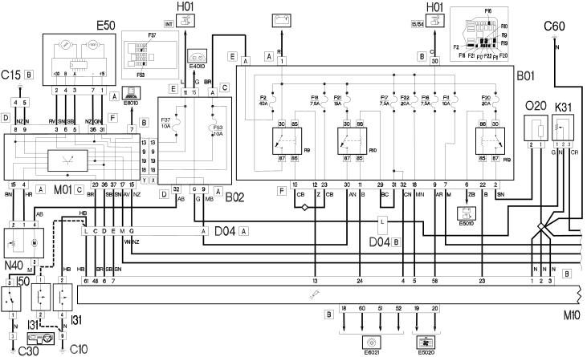
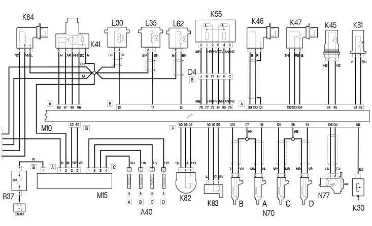

E5050 DIESEL ENGINES ELECTRONIC MANAGEMENT - WIRING DIAGRAM
- Path
- Electrical equipment > 1 ELECTRICAL FUNCTIONS > E50 ENGINE CONTROL AND MANAGEMENT SYSTEMS > E5050 DIESEL ENGINES ELECTRONIC MANAGEMENT > E5050 DIESEL ENGINES ELECTRONIC MANAGEMENT - WIRING DIAGRAM
- Kind
- wiring diagram
- Applies to
- engines: 1.9 JTD 8V; all production periods
- Interactive page
- https://sloeber94.github.io/elrnDB-fDbl/en/#/223002916
Applies to: engines: 1.9 JTD 8V; all production periods
Wiring diagram


COMPONENTS
Component code | Name | Assembly reference |
|---|---|---|
Heater plugs | - | |
Heater plugs | ||
Engine compartment junction unit | - | |
Engine compartment junction unit | ||
Engine compartment junction unit | ||
Junction unit under dashboard | - | |
Junction unit under dashboard | ||
Spark plugs (MAXI FUSE) fuse | - | |
Spark plugs (MAXI FUSE) fuse | ||
Battery earth | - | |
Front left earth | - | |
Facia earth, driver's side | - | |
Left rear earth | - | |
Earth on engine | - | |
Injection ECU earth | - | |
Front/engine coupling | - | |
Front/engine coupling | ||
Front/engine coupling | ||
Rear right door connection | - | |
Instrument panel | - | |
Instrument panel | ||
Brake pedal switch | - | |
Clutch pedal switch | ||
Inertial switch | ||
Fuel heating resistance and temperature sensor | ||
Insufficient engine oil pressure (switch) sensor | - | |
Insufficient engine oil pressure (switch) sensor | ||
Insufficient engine oil pressure (switch) sensor | ||
Water in diesel filter sensor | ||
Air flow meter | Op. 1092C POWER STEERING/SELF-LEVELLING SUSPENSION PUMP DRIVE | |
Air flow meter' | ||
Coolant temperature sender unit | ||
Engine temperature sensor for i.e. | ||
RPM sensor | ||
Rpm sensor | ||
Timing sensor | - | |
Timing sensor | ||
Accelerator pedal potentiometer | - | |
Accelerator pedal potentiometer | ||
Fuel temperature sensor | ||
Turbocharging sensor | ||
Turbocharging sensor | ||
Fuel pressure sensor | ||
Speedometer sensor | - | |
Speedometer sensor | ||
EGR solenoid valve | ||
EGR solenoid | ||
Waste-gate solenoid valve | ||
Butterfly casing solenoid valve | - | |
Body computer | - | |
Body computer | ||
Engine management ECU | ||
Engine management control unit | - | |
Engine management control unit | ||
Plug preheating control unit | ||
Heater plugs controlunit | ||
Plug preheating control unit | ||
Plug preheating control unit | ||
Plug preheating control unit | ||
Methane injection control unit | - | |
Fuel pump and sender unit | ||
EPIC injection pump | ||
Fuel pressure regulator | ||
Diesel preheating resistor | 1044D |
Topics linked from this page (57)
- 1004B POWER UNIT ASSEMBLY
- 1040A FUEL TANK AND COMPONENTS
- 1044B fuel filters
- 1056B MULTI-POINT INJECTION SYSTEM (MPI)
- 1060A diesel injection pump and control
- 1060D electronic diesel injection control
- 1060E diesel pressure pump
- 1060G pressure pump electric control
- 1068A accelerator pedal control
- 1064B control/safety devices
- 1072B inlet manifolds
- 1080C exhaust gas recirculation system (e.g.r.)
- 1084A indicators/check devices
- 1088C WATER PUMP AND THERMOSTAT
- 1092C POWER STEERING/SELF-LEVELLING SUSPENSION PUMP DRIVE
- 2180A milometer control
- 5505A multi-function components
- 5520C cold starting system (diesel engines)
- 5560B analogue control panel
- A040 HEATER PLUGS
- B001 JUNCTION UNIT
- B002 JUNCTION UNIT UNDER DASHBOARD
- B37 SPARK PLUGS (MAXI FUSE) FUSE ( ENGINE )
- C1 BATTERY EARTH ( ENGINE )
- C010 LEFT FRONT EARTH
- C015 DASHBOARD EARTH, DRIVER'S SIDE
- C30 LEFT REAR EARTH ( REAR )
- C60 EARTH ON ENGINE ( ENGINE )
- D004 FRONT/ENGINE COUPLING
- D36 REAR/RIGHT REAR DOOR COUPLING
- E050 INSTRUMENT PANEL
- I30 BRAKE PEDAL SWITCH ( FRONT )
- I31 CLUTCH PEDAL SWITCH ( FRONT )
- I50 INERTIA SWITCH ( REAR )
- K030 ENGINE OIL PRESSURE SENSOR (SWITCH)
- K31 WATER IN DIESEL FILTER SENSOR ( ENGINE )
- K041 AIR FLOW METER
- K46 RPM SENSOR ( ENGINE )
- K47 TIMING SENSOR ( ENGINE )
- K55 ACCELERATOR PEDAL POTENTIOMETER ( FRONT )
- K081 FUEL TEMPERATURE SENSOR
- K082 TURBOCHARGING SENSOR
- K83 FUEL PRESSURE SENSOR ( ENGINE )
- K84 SPEEDOMETER SENSOR
- K100 TEMPERATURE SENSOR AND HEATING RESISTANCE
- K45 ENGINE COOLANT TEMPERATURE SENSOR
- L30 EGR SOLENOID VALVE ( ENGINE )
- L35 OVERBOOST SOLENOID VALVE
- L62 BUTTERFLY CASING SOLENOID VALVE ( ENGINE )
- M001 BODY COMPUTER
- M010 ENGINE MANAGEMENT ECU
- M015 HEATER PLUGS CONTROL UNIT
- M019 METHANE INJECTION CONTROL UNIT
- N040 FUEL PUMP AND LEVEL GAUGE
- N77 FUEL PRESSURE REGULATOR ( ENGINE )
- N41 EPIC INJECTION PUMP
- O20 DIESEL PREHEATING RESISTOR